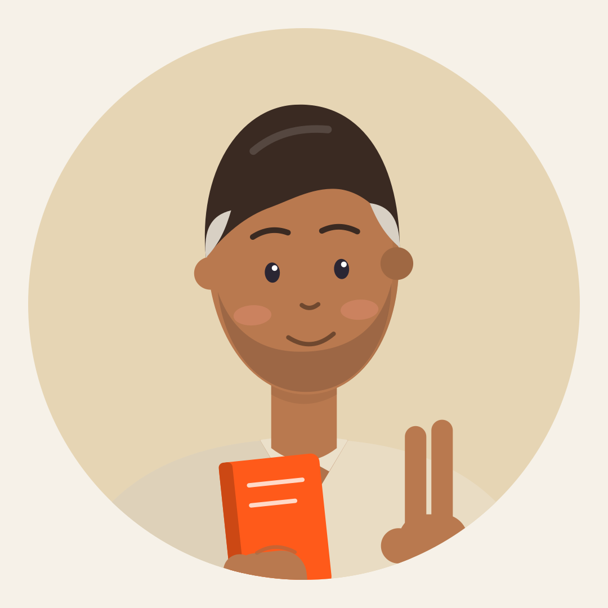
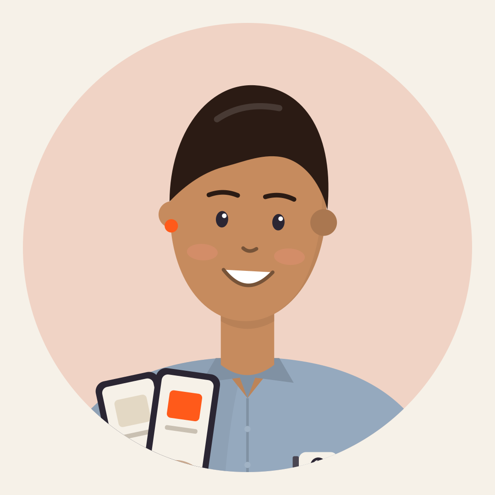

الدينامو
فريق التسويق لمشاريع One Studio: ثلاثة عشر زميلًا، ومراجِعة واحدة تعتمد
Dynamo
· marketing team

مُخطّط
الاستراتيجية والاستهداف
وسّام
الأسماء والعلامات
نقّاش
الهوية والشعار
لوّان
تصميم السوشال
راوي
الكابشنات وخطة المحتوى
محرّر
نصوص الموقع والمدوّنة
بنّاء
الواجهة وصفحات الهبوط
ماهر
الخادم والأداء
مُدقّق
مراجعة الموقع

ناشر
النشر والإشراف
مُعلن
الإعلانات المدفوعة
سفير
التواصل المباشر
مدوّن
التقارير والذاكرة